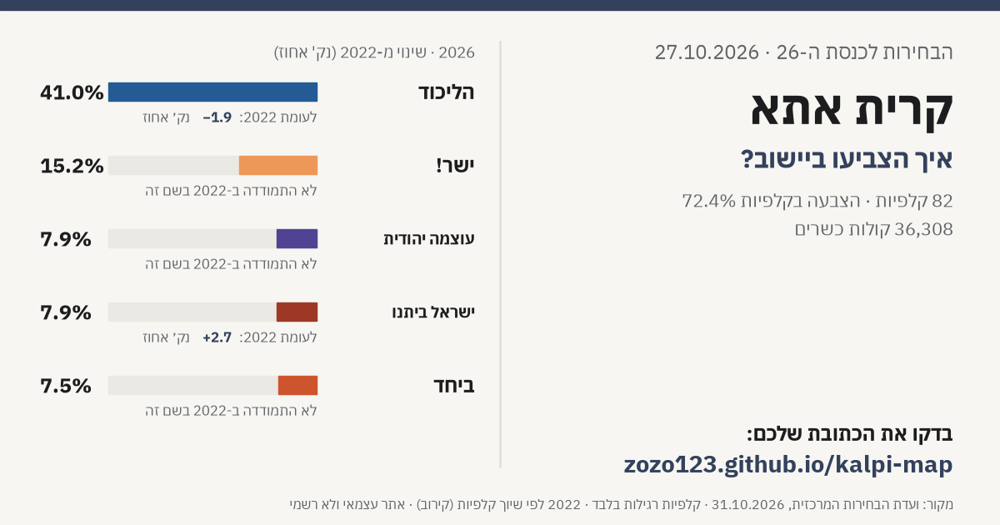

קלפיות ותוצאות לפי כתובת › יישובים › קרית אתא
איך הצביעו בקרית אתא?
בקרית אתא היו 50,389 בעלי זכות בחירה ב-82 קלפיות רגילות. הצביעו 36,493 (אחוז הצבעה בקלפיות 72.4%, ללא מעטפות כפולות); 36,308 קולות כשרים ו-185 פסולים. הרשימה הגדולה ביישוב: הליכוד עם 41.0% מהקולות הכשרים.
חפשו את הכתובת שלכם בקרית אתא ←
התוצאות בקרית אתא
| רשימה | 2026 | קולות | 2022 | שינוי (נק׳) | |
|---|---|---|---|---|---|
| הליכוד | 41.0% | 14,870 | 42.9% | -1.9 | |
| ישר! | 15.2% | 5,504 | — | ||
| עוצמה יהודית | 7.9% | 2,881 | — | ||
| ישראל ביתנו | 7.9% | 2,873 | 5.3% | +2.7 | |
| ביחד | 7.5% | 2,714 | — | ||
| ש"ס | 7.2% | 2,626 | 9.7% | -2.5 | |
| הציונות הדתית | 3.4% | 1,237 | 12.0% | -8.6 | |
| המילואימניקים והכלכלית | 3.2% | 1,177 | — | ||
| עמך ישראל | 2.2% | 809 | — | ||
| יהדות התורה | 1.9% | 702 | 1.8% | +0.2 | |
| הדמוקרטים | 1.7% | 618 | — | ||
| אחרות (מתחת ל-1%) | 0.8% | 297 |
שתפו
לפי שכונה
| שכונה | קולות כשרים 2026 | הרשימה הגדולה | אחוז |
|---|---|---|---|
| מרכז העיר | 18,229 | הליכוד | 40.6% |
| גבעה א | 2,990 | הליכוד | 45.3% |
| קריית בנימין | 2,957 | הליכוד | 49.8% |
| אברמסקי | 2,700 | הליכוד | 42.4% |
| גבעת טל | 2,511 | הליכוד | 29.7% |
| גבעת הרקפות | 1,939 | הליכוד | 48.4% |
| גבעת אלונים | 1,841 | הליכוד | 28.4% |
| גבעת רם | 1,365 | ישר! | 33.3% |
| קריית פרוסטיג | 696 | הליכוד | 51.3% |
| נווה חן | 554 | הליכוד | 44.9% |
| נווה אברהם | 526 | הליכוד | 57.0% |
יישובים נוספים
- תל אביב - יפו
- ירושלים
- חיפה
- ראשון לציון
- נתניה
- פתח תקווה
- אשדוד
- באר שבע
- חולון
- רמת גן
- אשקלון
- בת ים
- בני ברק
- רחובות
- בית שמש
- הרצליה
- חדרה
- כפר סבא
- מודיעין-מכבים-רעות
- רעננה
- לוד
- רמלה
- נהריה
- נצרת
- אילת
- ראש העין
- הוד השרון
- קרית גת
- גבעתיים
- עפולה
- עכו
- רהט
- קרית מוצקין
- כרמיאל
- נוף הגליל
- אום אל-פחם
- רמת השרון
- יבנה
- קרית ים
- קרית ביאליק
- מודיעין עילית
- טבריה
- נס ציונה
- קרית אונו
- פרדס חנה-כרכור
- נתיבות
- ביתר עילית
- טייבה
- שפרעם